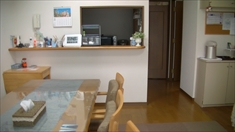

メニュー
ご紹介
こんな方が入所しています
入院していたので退院先が見つからない、退院を機会に一人暮らしをしたい。家を出ての一人暮らしは不安だが、相談や見守りがある事で、地域で自立して生活できるようになりたいと考える方々。
暮らしの様子は
耐火構造のワンルームマンションの一部屋を自分の部屋とし、鍵を持ち電気ガス水道は自分名義で契約。食事も自分で用意します。困ったことや相談は交流室の世話人が対応します。交流室は平日の午後開いていて、4～7人が自由に利用しています。
特徴・方針
部屋での生活に孤独感を感じる人は少なくありません。地域で自立して生活するというために交流室に支援を受けながら孤独感をやわらげ、やりすごす力をつけ、おおむね3年の利用期間で多くに方が自分名義で部屋を借りて地域生活をスタートさせています。他人から指示されず自分の考えをもって地域で生活することは人に与えられた権利です。そのためには多少の勇気が必要で、グループホーム多摩草むらは孤独感に寄り添い、皆さんの生き方を大事に、今日も一日良かったなと思えるに日々を提供したいと思っています。
利用者の声
- GHに来て２年。まあまあの２年でした。目標は初め立てらなかったのですが、世話人さんの言うように卒業して一人暮らしができるように主婦となって頑張っていくことです。
- スタッフさんや周囲の友達に見守られながら、過ごしています。将来的には経済的に自立して、一人暮らしができるようにしたいと考えています。自炊のレパートリーも増やしていきたいと思います。頑張ります。
- グループホームを卒業するまであと数ヶ月になりました。最初の頃は起床し、お昼までの家事で力を使い果たして、疲労困憊で何の生産的活動もなく、ただ一日が過ぎていきました。
自室にはテレビが無く、ラジオのみでしたがそれも悪くなく、実家に居た時のネット依存症状態も入所し一人暮らしを始めてから、かなり改善されてきたように感じます。まだ、一度体調を崩すと長いですが、世話人さんと相談しながらコツコツやって、対応のコツもつかめた気がします。これから不動産巡りをし、本当の自立を目指して頑張っていこうとおもいます。 - グループホームに入ってよかった事は、こんなにも話をする事、聞いてもらえる事は無かった。家族とのやり取りでは伝えたい事がうまく話せず、自分は上手く話す事ができる人間ではなかったが、辛い体験などをこんなにも話せるようになるとは思ってもなかった。